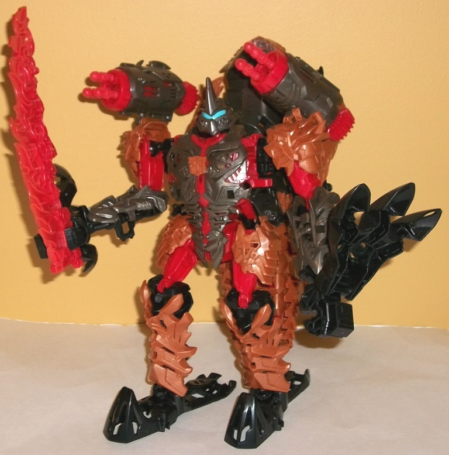
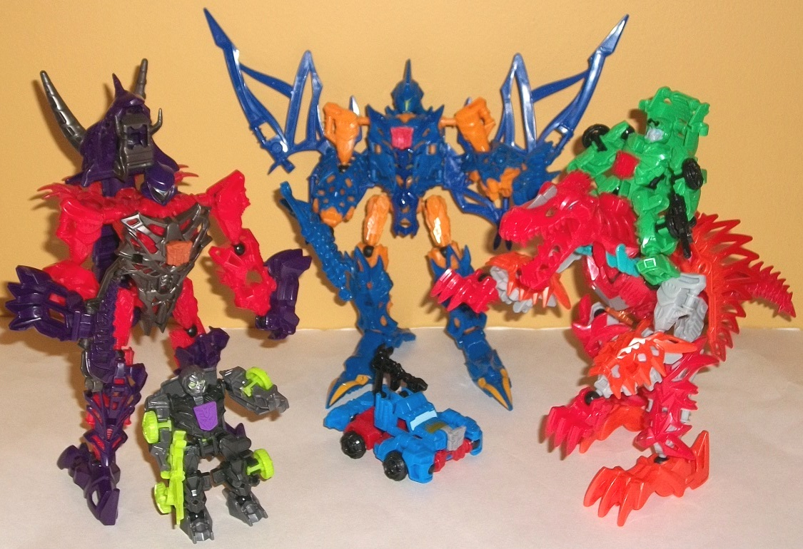
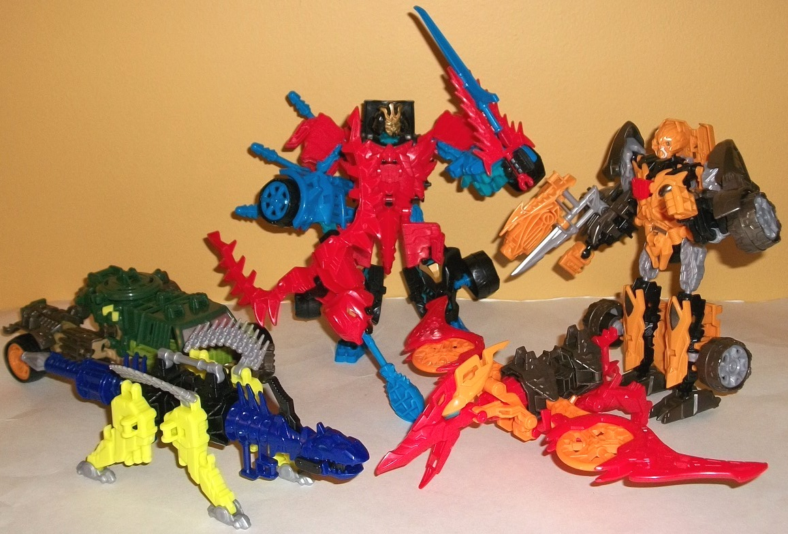

Construct-Bots
Year 2 (2014) Review
Construct-Bots
Year 2 (2014) Review

The second year of Construct-Bots
toys varied considerably more than the first year, but one major change
was made; for better or worse, the second year's Construct-Bots were (for
the most part) incompatible with the first year's Construct-Bots. Any ball
joint pieces could still be swapped, but the use of C-clips as joints in
the knees and elbows for the Year 1 toys were replaced with rubber ball
joints for the Year 2 toys. In addition, the pieces that connected to the
"core skeleton" parts connected in different ways-- that is, via clips
instead of 5 mm pegs this time around. For those who may have experienced
breakage with the Year 1 Construct-Bots toys when it came to disconnecting
the C-clips, not to fear-- the Year 2 designs are chock full of similarclips,
but they have enough "give" and aren't quite as tight, so they can come
off and on repeatedly without any fear of the clip pieces breaking (unless
you got a real lemon). Out of all the Year 2 Construct-Bots toys that I
have (which is all of them), only one of them ever had any clip points
break. (It was Beast Hunters Optimus Prime, in case you were curious, and
it was likely my mistake-- I tried to disconnect a piece that was connected
at three different places all at once, instead of doing the more logical
thing and disconnecting the piece at each place one at a time. Luckily
Optimus Prime and a few other Beast Hunters Construct-Bots had an extra
C-clip piece or two in case of just such an occurance.) Each Construct-Bots
box comes with an instruction booklet, but unfortunately Hasbro has completely
done away with the plastic stackable storage boxes-- you're gonna have
to find your own place to store them after you open the plastic bags the
pieces are in. The online Construct-Bots mini-game was also pretty much
given up on for the second year-- the Beast Hunters Construct-Bots had
codes in them, but after that the toys did not come with codes. It was
just as well, since the only update the game received for 2014 was a few
extra "boss battles" against Grimlock. No actual new parts from the 2014
toys were ever added to the game for building your own virtual 'bot.
Unlike the first year,
all of the Construct-Bots toys this year were NOT all the same size, just
with a different number of accessories-- but we'll get to that shortly.
First, the basic construction differences, besides the C-clips and ball
joints (which add more motion to the elbows and knees); for one, there's
a considerably fewer number of shared parts between the different Construct-Bots
toys released in 2014, though for the "regular"-sized toys, the core skeleton
pieces for ALL of them are basically the same-- the same hip pieces, the
same lower arm pieces, etc. Their hands are open to hold their weapons,
which now have a handle embedded in the side of said weapons instead of
at the bottom. The strength of the connection is slightly weaker than on
the Year 1 Construct-Bots', but it's not a huge deal. Additionally, the
hip pieces on the regular-sized toys were not able to have any "extra armor"
pieces attached to them for appearance anymore. The transformation for
the regular-sized toys also differed a bit, and the transformations weren't
quite as universal as they were in the first year's worth of toys.
The regular vehicles
transform by the following steps:
1. Connect the lower
arms to the sides of the waist via clips and fold in the hands.
2. Pull up the back
piece and fold it over the head so that it sits flush with the chest piece.
3. Push the lower waist-and-legs
section up and backwards; a spring mechanism lets it set into place for
vehicle mode.
4. Rotate the lower
leg pieces backwards and connect them together behind the back piece to
form the front of the vehicle mode.
5. Connect the leg pieces
together to form the front bumper.
Generally this leads
to less skeletal-looking robot modes and more solid vehicle modes, with
the only obvious robot mode extras usually being the upper arms and fist
pieces. It's still not nearly as convincing a vehicle mode as on most "normal"
TFs, but it looks considerably better compared to the Year 1 Construct-Bots,
particularly when you've got a bulky ground vehicle like an SUV.
In addition, there were
several Construct-Bots released in 2014 that had beast alternate modes;
their transformations varied a bit from figure-to-figure, but generally
it involved doing Step 3 from the above instructions to help hide the robot
head and then rearranging the limbs (and wings, if applicable) to form
the beast mode.
The first releases of
the Construct-Bots for 2014 were actually very rare; they were only really
released in Central Europe, in places such as Slovakia and Hungary. Luckily
I had a contact there who was able to get them for me, and I was surprised
by how much I loved them. The design "upgrades" really do wonders in terms
of looks, even if they don't have the same "swappability" that the 2013
Construct-Bots had. They also tend to have more accessories and weapons,
which is always a plus in my book.
The Beast Hunters Construct-Bots
toys kept the $10 U.S. "scout" class toys and the $15 "elite" class toys,
but changed the $25 size class to a "Triple Team" class; the core figure
was roughly elite in terms of the number of parts, but each Triple Team
pack also included a beast that could become a weapon for the larger TF
to wield and a smaller animal-to-robot toy. Listed below are the Beast
Hunters Construct-Bots toys released:
-Bumblebee (Scout sportscar,
Autobot)
-Ripclaw (Scout dragon,
Predacon)
-Starscream (Scout jet,
Decepticon)
-Optimus Prime (Elite
truck, Autobot)
-Shockwave (Elite tank,
Decepticon)
-Skystalker (Elite dragon,
Predacon)
-Bulkhead w/ Airazor
& Wolfang (Triple Team SUV, bird, and wolf, Autobots)
-Unicron Megatron w/
Ratbat & Barrage (Triple Team futuristic jet, bat, and rhinocerous
beetle, Decepticons)
Since these toys are
so rare, I've put together a mini-gallery of each of the Beast Hunters
Construct-Bots in all of their modes, which you can find here:
Beast
Hunters Construct-Bots Mini-Gallery
As for individual toys,
Unicron Megatron is definitely the stand-out of this group, looking fantastic
and menacing in both modes with no real extras and two little partners
as well, to boot. Both of the Predacons also look great, particularly Skystalker
who looks a TON better than his "mainline" toy. Optimus Prime is probably
the weakest of the these, with his truck mode looking pretty weak and the
ring of "dragon swords" also looking odd just more or less "hovering" above
his truck mode like they are.

Once the Age of Extinction
Construct-Bots hit (which were available pretty much everywhere), the construction
of the "regular"-sized toys still stayed the same as with Beast Hunters,
but the size categories were changed a bit, essentially creating a line
with two separate "gimmicks" on top of the core Construct-Bot assembly
gimmick. First, there were miniature "Dinobot Riders" Construct-Bots, selling
for about $5 U.S. a pop. These little guys were only a few inches high,
and all were of vehicular TF characters from Age of Extinction. They came
with a single weapon piece, but had several rubber ball joints-- they could
move at ball joints at the shoulders, hips, knees, and ankles, as well
as C-clip joint movement at the neck. As such, they could definitely hold
a solid pose. Their transformations all consisted of basically folding
up their robot mode bits and then folding up a vehicle "shell" piece over
the back of their robot modes, then placing them down on their stomachs.
The vehicle modes were considerably more iffy and square than the robot
modes, but hey, we're talking about $5-ish constructable transformable
toys. A little something's gotta give, here.
The next-largest toys
were the $10 U.S. Dinobots assortment, which are "standard" Construct-Bot
size with varied--but basic--transformations from dino to robot mode. Each
had a sword weapon formed out of their tail, and also had a gear-activated
gimmick in their backs for dinosaur mode. They ranged from cool gimmicks
like Grimlock's "chomping" ability and Strafe's "flapping wings" ability
to lame ones like Slug's... "horn/fin rotating ability"? Seriously, it
makes him look like he's a flower with his head coming out amidst the petals.
Weird. Anyways, these helped to add a bit more playability to the toys,
and the "Dinobot Riders" toys could ride these characters in dino mode
(with the Riders themselves in robot mode). The connection wasn't super-secure,
though, and you usually needed to move their vehicle backpack piece up
a fair amount to get the Riders to even slide onto the Dinobots as much
as they can-- this crossover "gimmick" could've used a bit more work.
Next up were the $20
U.S. "Dinobot Warriors" assortment, which featured larger versions of many
of the vehicular characters from the Age of Extinction movie, with transformations
and articulation identical to the vehicular Beast Hunters Construct-Bots.
To justify the beefier price point, though, they each came with their own
buildable dinosaur partner which was nearly as large as they were. The
dinosaurs tended to be held together by C-clips, mostly, so they didn't
have nearly as much articulation as the larger "main 'bots", but they were
pretty cool-looking nonetheless. They could also separate into various
weapons and armor for the "main 'bot" to attach to himself, forming stuff
like chestplates, large guns, shoulder-missile launchers, and the like.
For the most part the combinations look pretty cool, though a few were
a bit weak (Hound's partner Wideload sticks out as being a bit too simple,
basically becoming just two guns made from the two halves of his dinosaur
mode and weird leg-missile-launcher things on Hound's shoulders). Under
the increased weight of the dino-armor and weapons, however, many of the
Dinobot Warriors tended to sag a bit, unable to keep their arms up and
posed. (They could still stand upright, however.)
There were also a couple
of unique releases, like a Target exclusive 2-pack and Wal-Mart exclusive
3-pack of "G2"-decoed Dinobot repaints with one or two Dinobot Rider repaints.
The most notable unique release was the biggest Construct-Bot toy ever
released-- "Dinofire" Grimlock, a massive Construct-Bot bigger than even
a Leader class toy with his own unique (but still not particularly involved)
transformation. Besides a giant flame sword accessory, Dinofire Grimlock
also came with three rotary missile launchers, each being able to fire
three separate missiles by rotating said launcher barrels. One is inside
Grimlocks' T-rex mouth, and his gimmick in dino mode involved his mouth
opening, a red light coming on, and one of the missiles shooting out--
hence "Dinofire". It was a pretty cool gimmick, though his T-rex mode was
a bit weak compared to his awesome robot mode. And if you're worried about
the ball joints not holding up under the weight of such a large Construct-Bot,
don't-- most of Grimlock's major joints actually have TWO rubber ball joints
at each connection to increase the resistance, and they work wonderfully.
He also came with a redeco of the Optimus Prime Dinobot Rider build.
Listed below are the
Age of Extinction Construct-Bots toys released. (Of note is that Galvatron
and Starscream Dinobot Riders were also planned, as well as a possible
Galvatron Dinobot Warrior, but they were unfortunately never released):
-Autobot Drift (Dinobot
Rider sportscar)
-Autobot Drift w/ Roughneck
(Dinobot Warrior sportscar w/ ankylosaurus)
-Autobot Hound (Dinobot
Rider military vehicle)
-Autobot Hound w/ Wideload
(Dinobot Warrior military vehicle w/ dinosaur)
-Bumblebee (Dinobot
Rider muscle car)
-Bumblebee w/ Nosedive
(Dinobot Warrior muscle car w/ pterodactyl)
-Crosshairs (Dinobot
Rider sportscar)
-Dinobot Slug (Dinobot
triceratops)
-Dinobot Slash (Dinobot
velociraptor)
-Grimlock (Dinobot tyrannosaurus)
-Grimlock "G2 deco"
w/ Silver Knight Optimus Prime (Dinobot tyrannosaurus w/ Dinobot Rider
truck; redecos of original Construct-Bot versions of these characters)
[$15 U.S.; Target Exclusive]
-Grimlock "Dinofire"
version w/ Optimus Prime ($40 U.S. mega-sized tyrannosaurus w/ Dinobot
Rider truck; latter is a redeco of original Construct-Bot Dinobot Rider
Optimus Prime)
-Lockdown (Dinobot Rider
sportscar)
-Lockdown w/ Hangnail
(Dinobot Warrior sportscar w/ velociraptor)
-Optimus Prime (Dinobot
Rider truck)
-Optimus Prime w/ Gnaw
(Dinobot Warrior truck w/ dimetrodon)
-Scorn (Dinobot spinosaurus)
-Strafe (Dinobot two-headed
pterosaur)
-Strafe "G2 deco" w/
Bumblebee & Stinger (Dinobot two-headed pterosaur w/ two Dinobot Rider
cars; Strafe & Bumblebee were redecos of the original Construct-Bot
versions of these characters, whereas Stinger is largely a unique build,
albeit with Bumblebee's head) [$20 U.S.; Wal-Mart Exclusive]

The second year of Construct-Bots
saw some massive leaps forward for the line, with more ball joints and
C-clips allowing for more articulation and more accessories. Diversification
of sizes allowed some of the different Construct-Bots to act together in
various ways such as wielding another as a weapon or riding another, and
the line's first and only foray into a giant Construct-Bot with Dinofire
Grimlock was pulled off well, for the most part. Whereas I was pretty lukewarm
about the first year of Construct-Bots designs, in nearly all respects
the second year toys were better, better-looking, and lots more fun-- which
makes it such a shame that the line was canned quietly come the end of
2014. I really would've liked to see more Construct-Bots in this vein and
to see what other play patterns Hasbro could've come up with for the line.
Overall Rating:
9/10
Excellent
Back to Storage
Closet